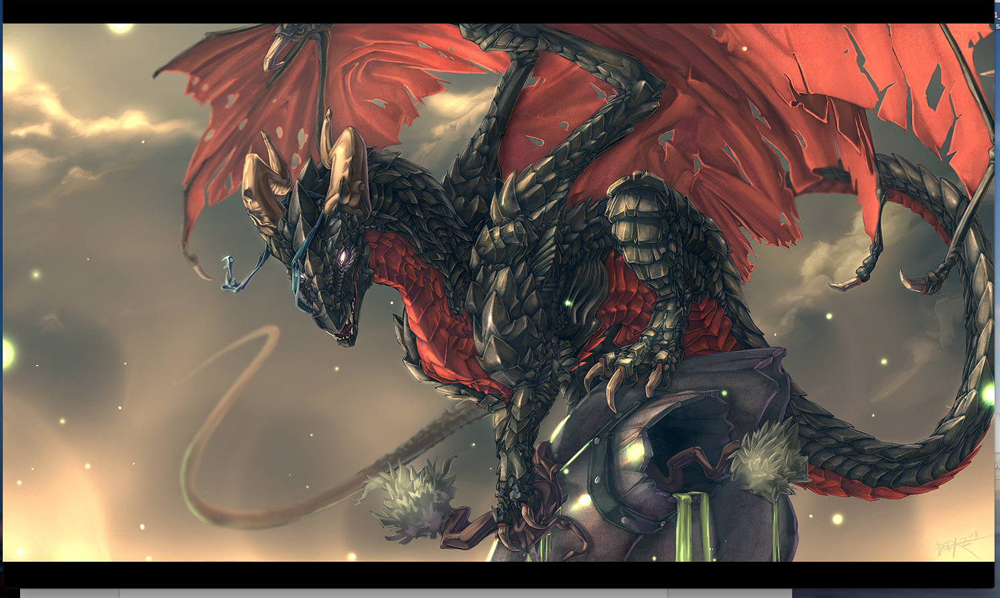
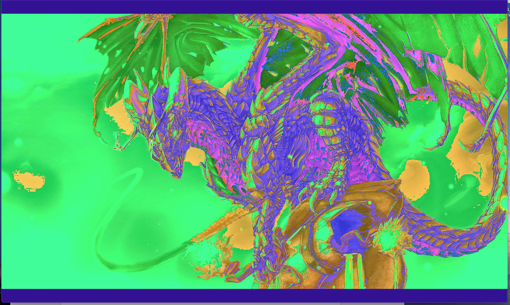
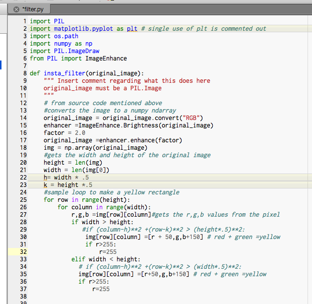

This is Bailey's python select an adventure which is basically an adventure similar to the serect life of pets movie(If you have not seen, it's about a dog a his adventure around the city of New York
 The first dragon image is the image that Bailey changed to the second python image all with python. This is part of the Image Artist project which is basically a project about adding cool filters to images . Beneath this is the main code that was used.
